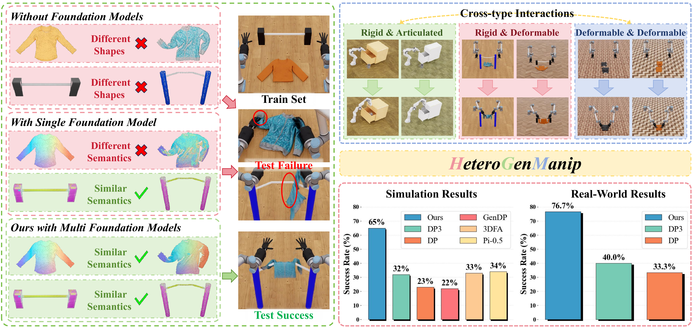
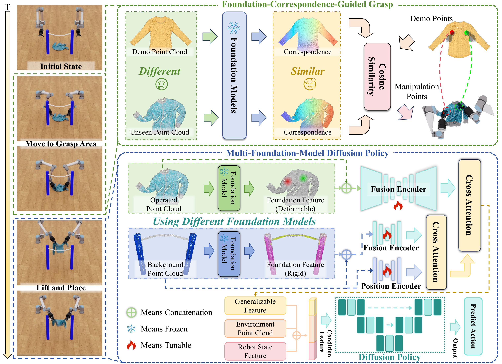
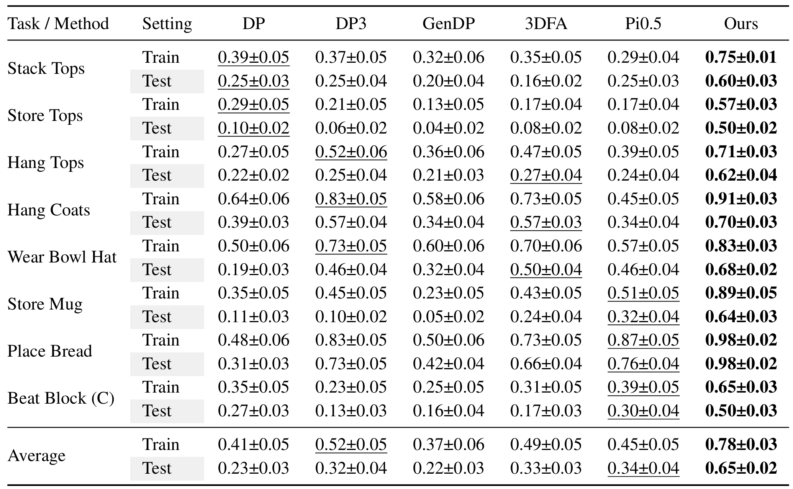
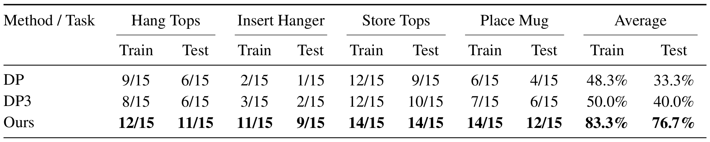

Abstract
Generalizable manipulation involving cross-type object interactions is a critical yet challenging capability in robotics. To reliably accomplish such tasks, robots must address two fundamental challenges: ''where to manipulate'' (contact point localization) and ''how to manipulate'' (subsequent interaction trajectory planning). Existing foundation-model-based approaches often adopt end-to-end learning that obscures the distinction between these stages, exacerbating error accumulation in long-horizon tasks. Furthermore, they typically rely on a single uniform model, which fails to capture the diverse, category-specific features required for heterogeneous objects. To overcome these limitations, we propose HeteroGenManip, a task-conditioned, two-stage framework designed to decouple initial grasp from complex interaction execution. First, Foundation-Correspondence-Guided Grasp module leverages structural priors to align the initial contact state, thereby significantly reducing the pose uncertainty of grasping. Subsequently, Multi-Foundation-Model Diffusion Policy (MFMDP) routes objects to category-specialized foundation models, integrating fine-grained geometric information with highly-variable part features via a dual-stream cross-attention mechanism. Experimental evaluations demonstrate that HeteroGenManip achieves robust intra-category shape and pose generalization. The framework achieves an average 31% performance improvement in simulation tasks with broad type setting, alongside a 36.7% gain across four real-world tasks with different interaction types.
Overview

Left: Comparison of three approaches for manipulation with different object types:
1) without foundation models, shape variations cause failure;
2) with a single foundation model, semantic understanding across object types is insufficient;
3) with multiple foundation models (ours), category-specific features enable successful manipulation.
Right: HeteroGenManip handles different-type interactions and achieves state-of-the-art performance.
Architecture

Our framework comprises two phases: Foundation-Correspondence-Guided Grasp and Multi-Foundation-Model Diffusion Policy. First, we leverage foundation model correspondence to identify manipulation points and execute grasping. Next, we select category-specific foundation models for feature extraction based on object types, then integrate the features via the Fusion Module into the Diffusion Policy for action prediction.
Simulation Results

We evaluate our framework on 8 simulation tasks selected and adapted from DexGarmentLab and RoboTwin, and compare it with 5 state-of-the-art baselines: DP, DP3, GenDP, 3DFA, and Pi0.5. HeteroGenManip consistently achieves the best performance in both train and test settings. On average, our framework improves the success rate from the strongest baseline's 0.52 to 0.78 in the train setting, yielding a +0.26 absolute gain. In the test setting, it improves the success rate from the strongest baseline's 0.34 to 0.65, yielding a +0.31 absolute gain and showing stronger generalization to unseen object configurations.
Real-World Results

Real-world evaluation across four manipulation tasks, with each method tested for 15 trials per task. HeteroGenManip achieves the best performance on all tasks in both train and test settings. On average, our framework improves the train success rate from the strongest baseline's 50.0% to 83.3%, yielding a +33.3 percentage-point gain. In the test setting, it improves the success rate from the strongest baseline's 40.0% to 76.7%, yielding a +36.7 percentage-point gain and validating its robustness under real-world object variations.
BibTeX
@misc{shen2026heterogenmanipgeneralizablemanipulationheterogeneous,
title={HeteroGenManip: Generalizable Manipulation For Heterogeneous Object Interactions},
author={Zhenhao Shen and Zeming Yang and Yue Chen and Yuran Wang and Shengqiang Xu and Mingleyang Li and Hao Dong and Ruihai Wu},
year={2026},
eprint={2605.10201},
archivePrefix={arXiv},
primaryClass={cs.RO},
url={https://arxiv.org/abs/2605.10201},
}